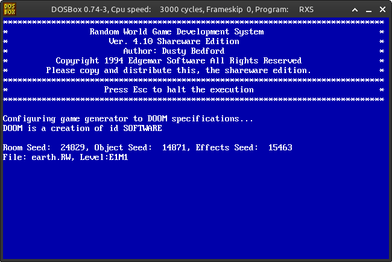

<!DOCTYPE html>
<html>
<title>Random World Game Development System | Doom: Rediscovering History</title>
	<meta charset="utf-8">
	<meta content="OWLY.FANS" property="og:title" />
	<meta content="Because Sometimes Doom is just bad" property="og:description" />
	<meta property="og:image" content="https://owly.fans/floppy.png">
	<meta content="#9B4F96" data-react-helmet="true" name="theme-color" />
    <meta name="keywords" content="owly, cass python, neocities, neozones, brit, uk, archive, site ran by a stud, england, wales">
	<link rel="shortcut icon" type="image/x-icon" href="../../../favicon.ico">
    <link rel="stylesheet" href="../../style.css">
    </html>
	    <body><p><a href="../">Back to index</a></p>
		<h1>Random World Game Development System</h1>
			<p></p>
			<hr>
			<p></p>
							<p><div class="tag">

<h3>Text Disclaimer</h3>
		<p>While the thoughts and opinions are all mine, I want to make it clear that I used ChatGPT to help me give suggestions and improve things like spelling (I have dyslexia) and the flow of the text. In other words, I used AI as an aid to help me fill in the gaps in my work.</p>
			</div><p></p>
			<em>Cass &#xAB;Owly&#xBB; Python, 2024-05-16. Published 2024-06-25</em>
<p>Okay, so remember a few reviews ago when I talked about how people would use SLIGE, a tool that automatically generates Doom levels with basically zero input from a human? Well, now we're going to talk about a program that predates that by quite a bit: <strong>Random World Game Development System</strong>.</p>
			
						<p><figure>
        <center><a href="rws_large.png"></a></center>
				<figcaption><p>An exmaple of a room that can be made with the Random World Game Development System - large and ugly.</p>
		</figcaption>
		</figure></p>

<p>
			
<p>Developed by Chris Bedford and Dusty Bedford (with Dusty seemingly doing most of the work), <strong>the Random World Game Development System Ver. 4.0</strong> was released in 1994. It's a DOS program that's relatively easy to set up and run. Once it's up and running, it will generate a new Doom WAD after a few minutes of processing. However, similar to my review of SLIGE, each run produces a unique level, meaning no two playthroughs are exactly the same. From my time with <em>the Random World Game Development System Ver. 4.0</em>, there seems to be no consistent layout, but rest assured, each level is uniquely terrible. Are you surprised that a random-level generator from the early 90s would produce subpar results?</p>

<p>Oh, you poor soul. Let me laugh at you. Ah ha ha!</p>

<p>After the program processes your new level, you'll get WADs with names like <tt><yell>Earth.WAD</yell></tt>, <tt><yell>Fire.WAD</yell></tt>, and <tt><yell>Polywog.WAD</yell></tt>. You'll likely be immediately disappointed by what you see. Many levels, which are for Doom and not Doom II, often start with the player facing a wall, making for an awkward start. Turning around, you'll typically find yourself in a large, bland room with the same texture plastered everywhere, making the environment ugly and off-putting. The lighting is very binary—either full-on bright or completely dark—with no consideration for player enjoyment.</p>
	
<p>For example, in one level, I started in a large square room next to a stairwell. The starting room was visible, but the stairs (which also had a few monsters) were pitch black, with no attempt at gradual shading. This made the environment look uncanny and combat difficult, as I couldn't see what I was shooting at, how many monsters there were, <em>what</em> types of monsters were present, or if I could even dodge incoming attacks.</p>

<p>Great. This is straight-up unfair to the player, who up to this point only has access to the pea shooter that is the pistol.</p>

<p>Speaking of weapons, there's zero balance in these generated levels. Sometimes you'll come across a shotgun; other times you'll pick up the BFG9000. However, the monsters you'll face are low-tier ones like imps, former humans, and shotgunners. The enemy count in these WADs is also low, with some rooms completely devoid of monsters or objects. For my playthroughs, I used the default settings, both to see what the average player would experience and because I didn't know how to change the settings. I'm a silly woman who needs a man's help in this confusing world!</p>
			
									<p><figure>
        <center><a href="dos.png"></a></center>
				<figcaption><p>Running the program is rather simple, once you exstract the ZIP fot it, simply run <yell>MakeAll.bat</yell>, making sure that <yell>Doom.wad</yell> is in the same folder.</p>
		</figcaption>
		</figure></p>

<p><center><strong><span aria-hidden="true">∴</span></strong></center></p>

<p>The experience of using the Random World Game Development System is, sadly, not a fun one. Many of the maps consist of simple squares thrown together with no thought, and some sections are downright unfair. For instance, there are massive holes that you can't escape from once you fall in. At one point, I got stuck in a hole due to a hall-of-mirrors effect that made it <em>look like I could pass through</em>, but I couldn't. I trolled the map back by using the NOCLIP cheat. This was unfair to the player, as there was no reasonable way to know that the path was impassable.</p>

<p>As many of you may know, the early days of Doom modding were... not the <em>best</em>. However, many WADs from that time, made by people, are much better than whatever this is. Even the first fan-made Doom level, Jeff Bird's <em>Origwad</em>, seems a hundred times more competently made, and it was created entirely by hand without editors.</p>
			
<p>Would I recommend someone go through the trouble of downloading this, opening DOSBox, and running the program? Well <em>duh</em>, no. I think I made that point clear in this review. But since you seem nice, I've attached some WADs that I generated. Just open them up in your source port of choice and try to enjoy them ;)</p>
			
<h3>Downloads</h3>
<ul>
	<li><a href="https://www.doomworld.com/idgames/utils/randomizers/rws411">Random World Generator</a> on /idgames</li>
	<li><a href="https://archive.org/details/rws411">Random World Generator</a> via the Internet Archive</li>
</ul>

<h3>WADs to download</h3>
<p>If you don't want to download and run the programs needed to make new maps, here are a few that genarated, all E1M1.</p>
<ul>
	<li><a href="MILITARY_20240514_162612.WAD">MILITARY.WAD</a></li>
	<li><a href="POLYWOG_20240514_162830.WAD">POLYWOG.WAD</a></li>
	<li><a href="FIRE_20240514_163454.WAD">FIRE.WAD</a></li>
	<li><a href="EARTH_20240514_164356.WAD">EARTH.WAD</a></li>
</ul> 
			
<p></p>
	<hr>	
<p><strong>Want to support OwlyFans? <a href="/nft/">See our NFTs</a>!</strong>
</p>
<p>Screenshot details: For the screenshot, I opted to use <a href="https://eev.ee/release/2017/11/23/eevee-mugshot-set-for-doom">Eevee mugshot set for Doom</a>, <a href="https://github.com/freedoom/freedoom/releases/tag/v0.13.0">Freedoom version 0.13.0</a> as the main IWAD, and fianlly <a href="https://github.com/NightFright2k19/doom_widehud">Widescreen statusbars for Doom</a> (<tt>freedm_uwide.wad</tt>). The screenshot itself were taken in <a href="https://doomwiki.org/wiki/GZDoom">the GZDoom source port</a>.</p>
	
	<p>Copyright 2024 - <script type="text/javascript">
var today = new Date()
var year = today.getFullYear()
document.write(year)
</script> by Cass &#xAB;Owly&#xBB; Python, licensed under the <a href="../../../license/fopl-mdp-v2" title="The Freedom Owl Public License: Modifications, Distributions, and Private Use Version 2" alt="The Freedom Owl Public License: Modifications, Distributions, and Private Use Version 2">FOPL-MDP V.2</a>. Please see <a href="../../../humans.html">humans.html</a> for full credit and thanks. Peace and love.</p>
<p><font color="black"><center>&#x2605;</center></font></p>
<p>
<div style="text-align:right">
<a href="http://bytemoth.nfshost.com/cd5k-net/tau">&tau;</a>
</p>
</div>
<p></p>
	<script src="../../../ruffle/ruffle.js"></script>
<script src="../../../script.js"></script>
    </body>
</html>